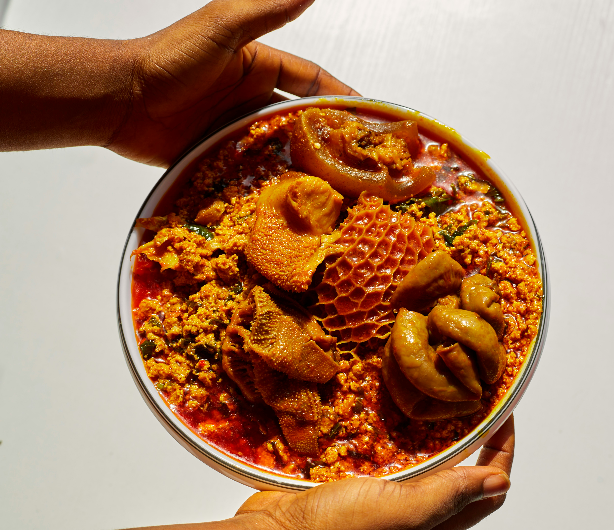

Seth's Egusi Soup Recipe
Home

Description
Seth's Classic Egusi Soup is a delicious homemade Nigerian delicacy, prepared with
carefully selected ingredients and a rich blend of traditional spices. A perfect combination
of authentic flavour, freshness and goodness in every serving.
Ingredients
- 2 cups of Ground Melon seeds
- 3⁄4 of Palm oil
- 500 grams of Beef
- 2-3 pieces of stock fish heads
- 1⁄2 of Grounded Crayfish
- 4-6 pieces of scotch bonnet peppers
- 2 medium onion bulbs
- 2 bunches of fluted pumpkin leaves
- 2-3 Seasoning Cubes
- Salt
- Water or meet stock
Steps
- Prepare the ingredients: Wash and season the beef, ponmo and stockfish. Rinse the dried fish and vegetables,
then chop the ugu leaves. Blend the pepper and onions.
- Cook the meat: Place the beef, ponmo and stockfish in a pot. Add seasoning cubes, salt, onions and a little water.
Cook until tender, reserving the meat stock.
- Prepare the egusi: Mix the ground egusi with a little water to form a thick paste. Set aside.
- Heat the palm oil: palm oil into a clean pot and heat gently.
Add some chopped onions and stir briefly.
- Add the egusi: Add the egusi paste in small portions or as one mixture, depending on your preferred cooking style.
Stir gently and allow it to cook for a few minutes.
- Add the pepper mixture: Pour in the blended pepper and onions. Stir and allow everything to cook together.
- Add the meat and fish: Add the cooked beef, ponmo, stockfish, dried fish and meat stock. Mix properly.
- Season the soup: Add ground crayfish, seasoning cubes and salt to taste. Allow the soup to simmer until the egusi is fully cooked and the oil begins to rise.
- Add the vegetables: Add the chopped ugu leaves and stir gently. Allow to cook for another 3–5 minutes.
- Serve: Turn off the heat and allow the soup to settle briefly. Serve hot with pounded yam, eba, fufu or semovita.